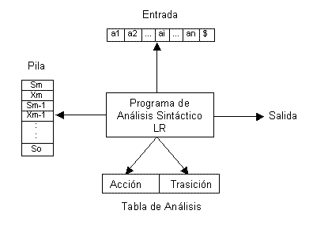
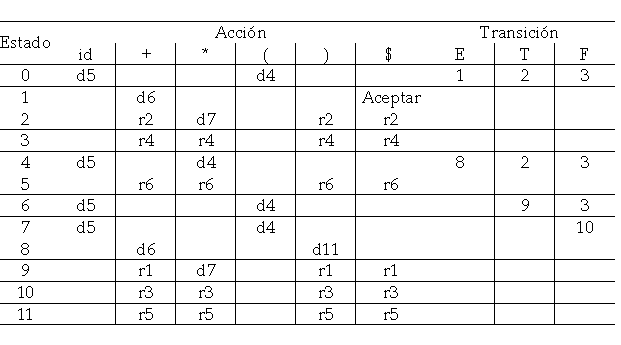
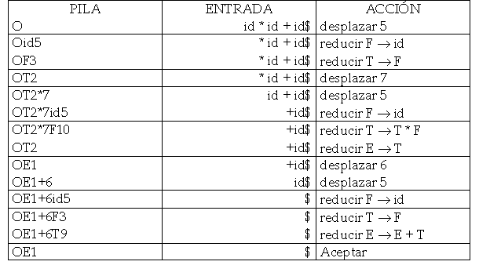

El algoritmo consta de una entrada, una salida, una pila, un programa conductor y una tabla de análisis sintáctico con dos partes (acción y transición). Lo que varía en todos los métodos LR es la tabla de análisis.

Cada Xi es un símbolo gramatical y cada Si es un símbolo llamado estado.
La tabla consta de dos partes, la función acción, que indica una acción del analizador y la función transición, que indica las transiciones entre estados.
La operaciones se basan en el estado en el tope de la pila Sm y el símbolo aI de la entrada; existen cuatro operaciones:
- desplazar S, donde S es un estado
- reducir por una producción gramatical A -> $beta;
- Aceptar
- Error
Algoritmo
ENTRADA: una cadena w y una tabla para la gramática G
SALIDA: si w pertenece a L(G), es un análisis ascendente de w, de lo contrario se indica error
MÉTODO: inicialmente la pila contiene So, donde So es el estado inicial y w$ esta en el buffer.
apuntar ae al primer símbolo de w$
apuntar ae al primer símbolo de w$
while(1) {
//sea S el estado en el tope de la pila y a
//el símbolo apuntado por ae
if (accion[S,a]==desplazar S') {
meter a y después S' en la pila
avanza ae
  }else if (accion[S,a]==reducir A -> β) {
* sacar 2 x |β| símbolos de la pila
* sea S' el estado actual en el tope de la pila
* meter A y después transición[S',A] en el tope
* emitir la producción A ->b
}else if (acción[S,a]==Aceptar) {
return();
}else {
error();
}
}
}
Ejemplo:
Sea la gramática:
- E -> E +T
- E -> T
- T -> T * F
- T -> F
- F -> (E)
- F -> id
y la tabla:

para la cadena w = id * id + id la corrida sería la siguiente:

{kind=link}
{kind=link}
{kind=link}